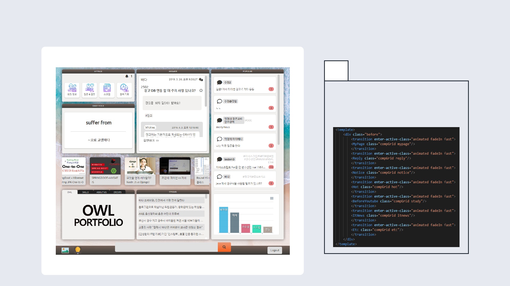
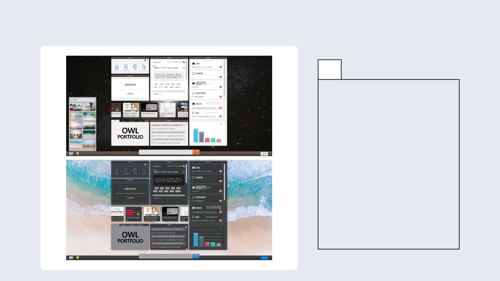
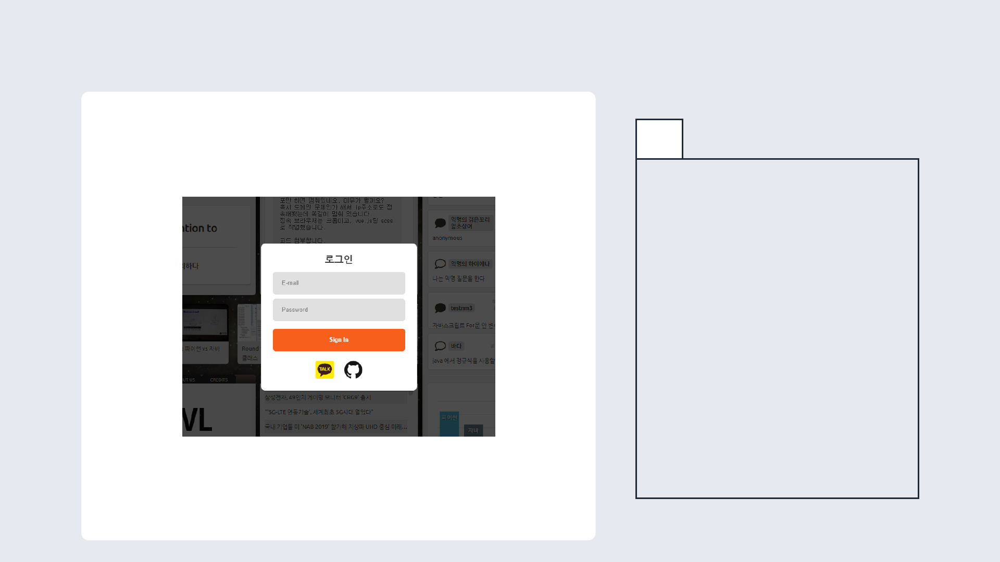
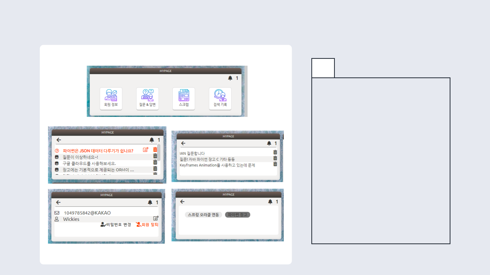
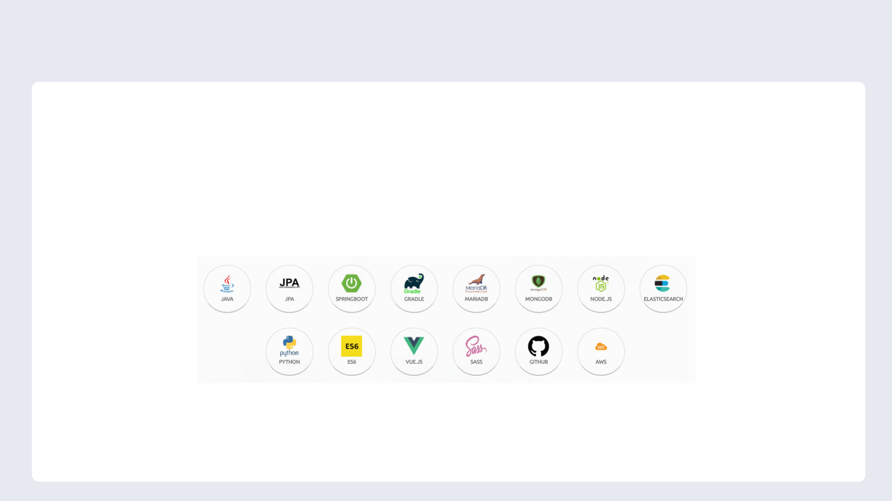

PORTFOLIO
개발자를 위한 검색 사이트
OWL SEARCH
OWL SEARCH PRESENTATION
개발자를 위한 검색 & 커뮤니티 사이트
네이버 검색 따로, 구글 검색 따로, 질문 따로 ?
모두 한 곳에서 해결 가능한
OWL Search

OWL SEARCH PRESENTATION
01
SPA
Vue.js를 이용한 싱글 페이지 어플
리케이션 구현

OWL SEARCH PRESENTATION
02
테마 변경 기능
배경과 컴포넌트 테마 변경 가능

OWL SEARCH PRESENTATION
03
로그인 API 연동
카카오, Github 로그인 API 연동

OWL SEARCH PRESENTATION
04
마이 페이지
회원 정보 수정 및 탈퇴 기능, 답
변 알림 서비스, 내가 쓴 질문 &
답변 보기, 스크랩 글 보기, 검색
기록 보기 구현

OWL SEARCH PRESENTATION
05
검색 결과
네이버, 구글, 자체 검색 결과
+ 질문 검색 결과
+ 위키피디아 검색 내용
+ 유튜브 추천
(MariaDB, JPA, ElasticSearch,
Naver & Google API 사용)

OWL SEARCH PRESENTATION
사용 기술